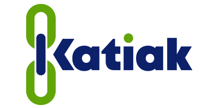

Registro de visitas
Entrada y Salida con dos botones; la duración de la visita se calcula sola. La demostración más sencilla del método de captura.

Demostración del sistemaEntrada y Salida con dos botones; la duración de la visita se calcula sola. La demostración más sencilla del método de captura.